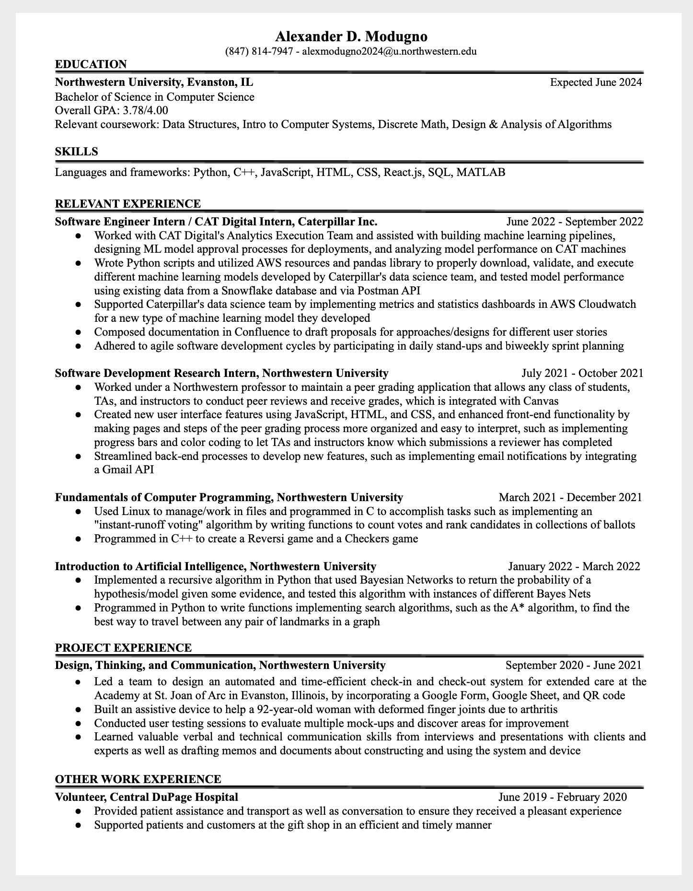

Read through my resume to learn more about my experiences!

View questions/answers related to my resume:
What has been my most influential/impactful experience so far?
My software engineering internship at Caterpillar has been most valuable to me. I assisted CAT Digital’s Analytics Execution team with maintaining and designing processes so that machine learning models could be ingested, approved, and executed. These machine learning models analyzed current data from different Caterpillar machines and determined if there were outliers or anomalies in the data in comparison to previous data on functional machines. Most of my tasks involved writing code to update processes to handle these different machine learning models and design ways to measure its performance.
How have my studies prepared me for roles in software engineering?
My coursework so far has prepared me and given me the skills and knowledge to be successful. For instance, I’ve learned many languages like, Python, C++, and MATLAB in my engineering and computer science classes, and I’ve applied concepts learned in these classes to assignments where I developed programs to, for example, create a Checkers game and implement search algorithms to identify the best way to travel between points on a graph. My engineering design courses have also prepared me well because they taught me vital collaboration and interpersonal skills, and these courses enhanced my critical thinking skills and sense of creativity.
Why am I interested in computer science and software engineering?
I chose to major in computer science because it affords me the opportunity to explore my passions: solving complex and challenging problems, learning new things, and producing creative experiences. I am interested in software engineering because I love that through code, I can generate ideas that solve user-specific problems, design possible solutions, and then eventually execute them.